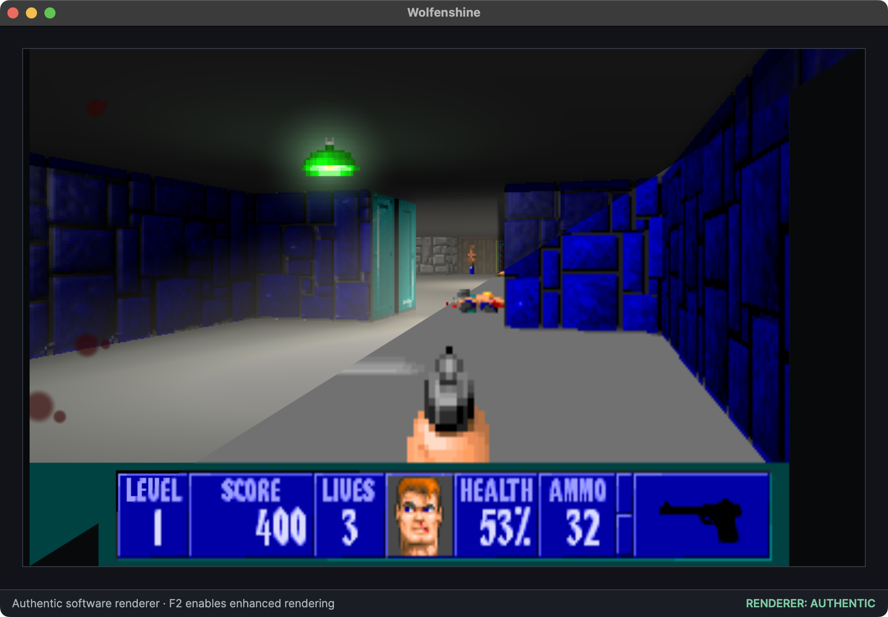
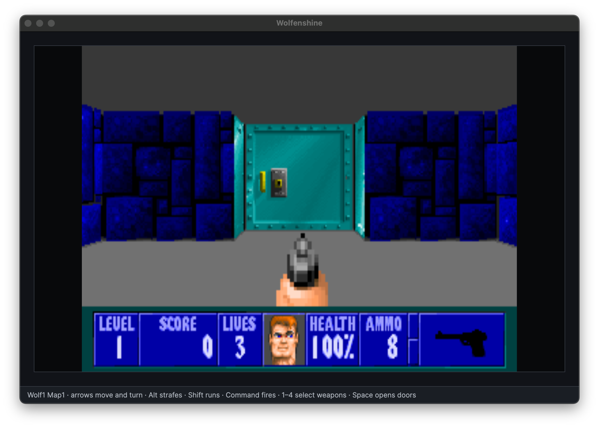
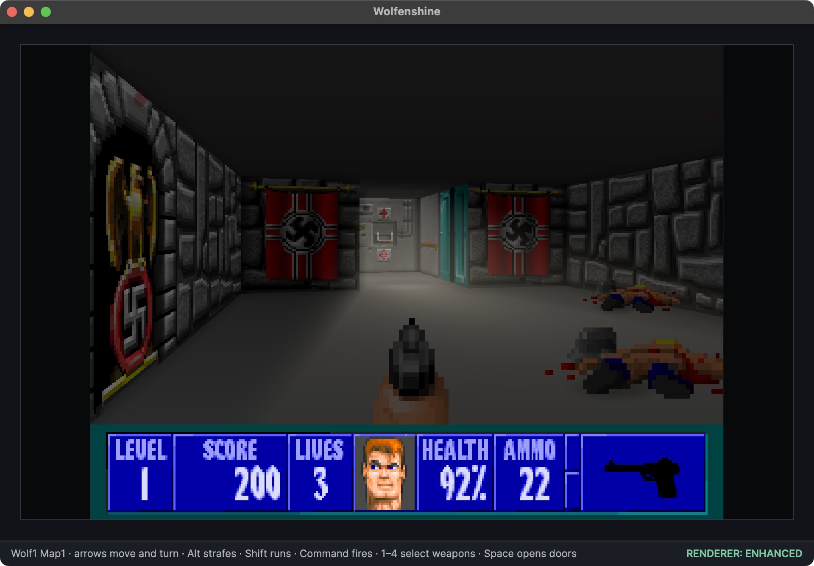
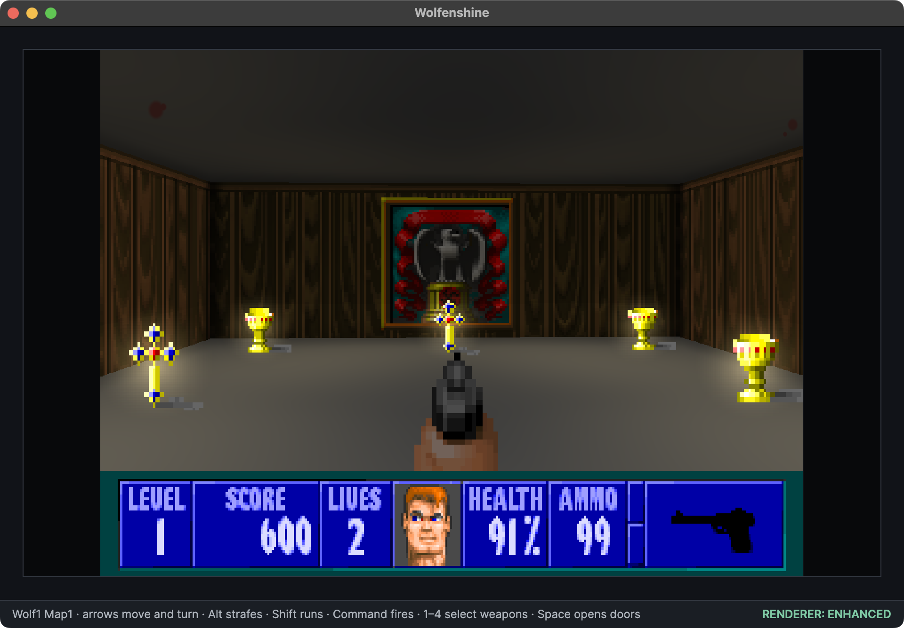
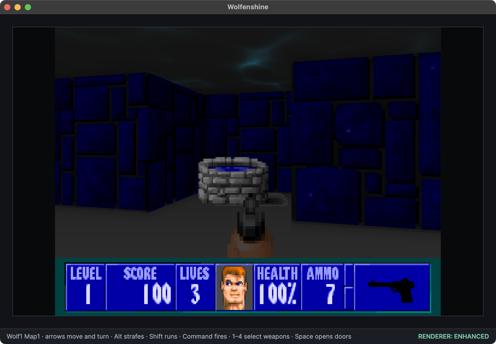
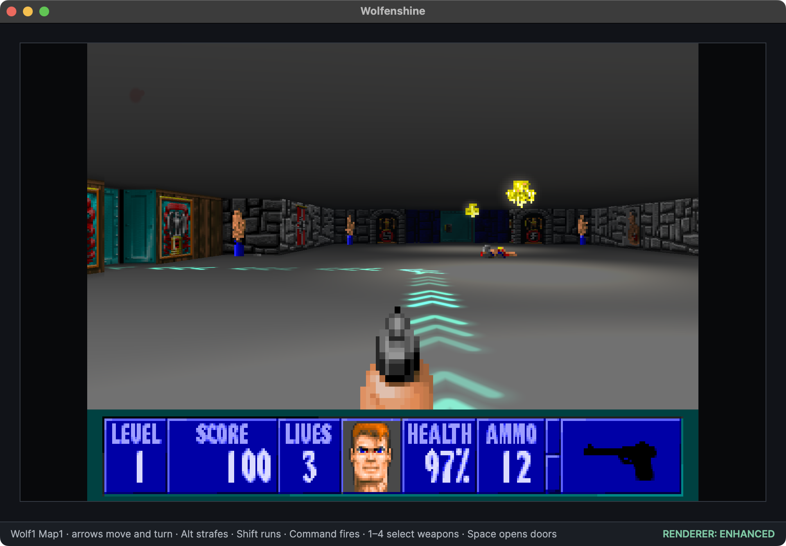

Wolfenstein 3D is a game I grew up playing. I remember the first time I saw it I was amazed at its '3D' environment.
Obviously I know now that it's not quite 3D, but at the time it was awesome.
The aim was not to turn Wolfenstein into a different game. It was to ask what the existing game might look like if its pixels could participate in modern lighting.
Some of the comments I have received since putting this in the public domain often suggest I use upscaled graphics, rewrite using Unity, make it truely 3D, etc. All great ideas, but I think those approaches have already been taken. My goal was to make a version of the game a 40-something year old could see and be completely familiar with.
I have written several raycasters over my many years of software development, but I recently had some spare time on my hands and wanted to try 'revamping' the original game engine. C# is my language of choice these days, so I time-boxed myself to see how far I'd get..
The levels are grids. The walls are square. Enemies are sprites. A raycaster draws the world one vertical slice at a time. How hard could it be?
Wolfenshine is my modern C# reimplementation of Wolfenstein 3D. It loads the maps, artwork, music and sounds from a legitimate copy of the original game, but the engine itself is independently written. It can present the game as an authentic 320×200 software-rendered experience—or, at any moment, you can press F2.
Then the lights come on.

Start with the original rules
I did not want to begin by “improving” Wolfenstein. First I needed to understand it.
That meant loading the original data formats, reconstructing maps, decoding artwork and sprites, and building a framebuffer-based renderer with the familiar 4:3 presentation. Doors had to slide correctly. Pushwalls had to remain secret until discovered. Guards had to see, hear, chase and attack. The HUD, weapon animations, pickups, keys, scoring and intermission screens all had to feel recognisable.
Thankfully many people have already researched and documented much of this, and in the age of AI-assisted development getting an prototype up and running only took a few days.
Note: I do use Codex to help explain things, and write chunks of code for me. I have written loggers, utility classes, renderers, shaders many many times over. Using AI to be able to to pull in code from my backlog makes development hugely efficient.
The project uses the original game data rather than redistributing it. Wolfenshine can use the freely available shareware episode or the full six-episode data from a legitimate installation. The setup screen accepts the original archive or data files and keeps them outside the repository.
That separation turned out to be a useful design constraint: the engine has to understand the game’s formats cleanly, while copyrighted assets remain owned and supplied by the player.

One game, two renderers
The authentic renderer is not merely a nostalgic filter placed over a modern 3D scene. It is a real software-rendered framebuffer built around the original grid world and pixel artwork.
The enhanced mode sits alongside it rather than replacing it. Both renderers consume the same world, actors and game state. Pressing F2 does not reload the level or translate the player into a second implementation; it simply changes how the current frame is drawn.
That made the comparison much more interesting. Every enhancement had to respect the original art instead of hiding it:
- Coloured lights spill through rooms and across enemies.
- Muzzle flashes briefly illuminate nearby surfaces.
- Doorways cast shafts down into darker spaces.
- Treasure, keys and weapons can glow without replacing their sprites.
- Fog and distance shading add depth to the flat grid.
- Puddles and wells project animated caustics onto the ceiling.
- Bloom, ambient occlusion and generated wall relief add atmosphere around the pixels.



A luminous path through the castle
OK, so I did deviate from the original game slightly...
Wolfenstein’s secret walls are part of its charm, but returning to a level after thirty years can make the route to the lift slightly less obvious than memory suggests.
Holding Tab in enhanced mode draws a glowing path directly onto the floor. It is not a line through walls. The route follows the same gameplay rules as the player: it can use openable doors, respects locks, leads to reachable keys when necessary, and only incorporates a secret passage after its pushwall has been discovered.
The trail is rendered as part of the world, so walls and doors naturally hide the sections beyond them. Three chevrons flow across each tile and bend around corners. Releasing Tab fades the complete captured route; pressing it again recalculates using the latest keys, doors and secrets.
It is a modern convenience, but one that still belongs inside the raycast world.

Explore the source and current releases on GitHub.